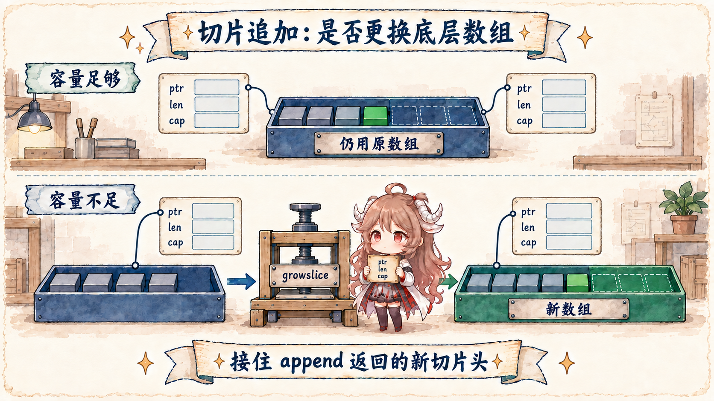

阅读目标：不需要先知道 slice 的内部结构。读完后，看到赋值、传参、返回值或 channel 发送，你应该会先问两句：这一步复制了什么？复制品里面还有没有指向同一份底层数据的东西？
本文先用可运行代码建立直觉，再用三层证据确认它：语言语义以 Go 语言规范的 Representation of values、
Slice types 和 for 语句为准；
实现固定到 Go 1.26.0 tag；可观察行为由仓库中的
值语义测试覆盖。
runtime 布局是解释当前实现的证据，不是让业务用 unsafe 依赖内部字段的承诺。
一、先看一个“复制了却还会互相影响”的例子
a := []int{10, 20}
b := a
b[0] = 99
fmt.Println(a) // [99 20]
fmt.Println(b) // [99 20]
b := a 确实发生了复制，但复制的是一张很小的“说明卡”：数据从哪里开始、当前有多长、最多能用多大。
两张说明卡起初都指向同一排元素，所以通过任意一张卡改第一个元素，另一边也能看到。复制说明卡，不等于复制说明卡指向的整间仓库。
这就是“Go 只有值传递”真正有用的读法：赋值、函数传参、返回值和 channel 发送都在传递值，但“值”不一定包含整棵对象图。 规范明确区分了两类表示：布尔、数值、数组、结构体这样的值包含其数据的完整副本；指针、函数、slice、map、channel 的非 nil 值含有对底层数据的引用。 interface 则取决于它装入的动态值。
| 表达式的静态形状 | 赋值直接复制 | 复制后可能共享 | 第一检查点 |
|---|---|---|---|
int、bool | 数值本身 | 无 | 无需追别名 |
| 数组、结构体 | 整个数组/结构体值 | 字段内部携带的引用 | 递归查看字段 |
string | 字符串值 | 不可修改的字节序列 | 切片与转换是否分配 |
slice | 指针、长度、容量 | backing array | 范围与容量 |
map、channel | 指向 runtime 状态的值 | 同一张表/同一个 channel | 谁能修改、怎样同步 |
interface | 动态类型与动态数据 | 取决于动态值 | 类型和值都要看 |
表格只是把刚才的两问压缩起来。“结构体被完整复制”也不是深拷贝承诺。若 struct 含 []byte 字段，结构体值和 slice 头都被复制，
两个 slice 头仍可能指向同一个数组。分析应逐层展开，而不是按最外层类型贴“值/引用”标签。
先只记一个判断法：变量本身会被复制；但变量里如果保存着“去哪里找数据”的信息，复制品仍可能找到同一份数据。
接下来让这个判断法依次经过 fetchd 的 slice、append 和结果 channel，再回头看 runtime 名字。
二、回到 fetchd：一次请求里发生了哪些复制
第一篇的 handler 只有几十行，却同时出现四次典型交接：query 返回 URL slice；range 把每个字符串值交给 goroutine；
worker 把 fetchResult 发进 channel；聚合器再 append 到结果 slice。
targets := r.URL.Query()["url"]
results := make(chan fetchResult, len(targets))
for _, target := range targets {
go h.fetch(ctx, target, results)
}
batch := make([]fetchResult, 0, len(targets))
for range targets {
batch = append(batch, <-results)
}
这里不是“一条引用一路传到底”。targets 是一个 slice 值；每轮 target 是一个 string 值；
goroutine 调用参数再得到 string 值；channel 复制一个 fetchResult 值；append 把收到的元素写入 batch 的 backing array。
每一步都复制值，但隔离程度由值的内部表示决定。
三、slice：复制三元组，共享 backing array
规范把 slice 描述为底层数组一个连续区段的 descriptor，具有长度和容量。当前 runtime 的内部结构把这件事直接写成三字段：
// src/runtime/slice.go
type slice struct {
array unsafe.Pointer
len int
cap int
}
执行 b := a 时，b 得到自己的三元组；修改 b 的长度不会改变 a.len。
但两个 array 字段起初相同，所以索引写会穿过各自的头，落到同一块数组。
original := make([]string, 2, 4)
copyOfHeader := original
copyOfHeader[0] = "changed" // original[0] 也变了
copyOfHeader = append(copyOfHeader, "gamma")
len(original) == 2 // 每个头有自己的 len
original[:3][2] == "gamma" // 但 append 仍写入共享数组
append 为什么必须接住返回值
append 返回一个新的 slice 值。若旧容量足够，新值仍指向旧数组；若 newLen > oldCap，编译器生成的路径会进入
runtime.growslice。因此调用方必须写 s = append(s, x)：即使底层没换，长度也只存在返回的新头里；若扩容，更必须接住新指针。
沿 growslice 看一次扩容
func growslice(oldPtr unsafe.Pointer, newLen, oldCap, num int, et *_type) slice {
oldLen := newLen - num
newcap := nextslicecap(newLen, oldCap)
// 按元素尺寸计算 capmem，并检查溢出
p := mallocgc(capmem, et, true)
memmove(p, oldPtr, lenmem)
return slice{p, newLen, newcap}
}
真源码还会区分元素是否包含指针、执行 race/msan/asan 检查、做写屏障和分配器尺寸取整。nextslicecap 对较小 slice 倾向翻倍，
对较大 slice 平滑过渡到约 1.25 倍；但最终容量还受元素大小和 size class 影响。增长公式只是当前实现细节，Go 语言不保证这个倍数。
别名 bug 通常来自共享修改规则没说清
函数接收 []T 时得到的是头的副本。它可以改共享范围内的元素；它对局部 slice 重新切片或 append，并不会自动更新调用方的头。
若 API 需要一份不受调用方后续修改影响的数据，应明确 clone：copied := append([]T(nil), input...) 或 slices.Clone(input)；若只在调用期间读取，应约定谁能改、被调用方能否在返回后继续保存它。
四、继续追踪三种常见的共享情况
4.1 channel 发送复制元素，不承诺深拷贝
results <- result 发送的是一个 fetchResult 值。对有空位的 buffered channel，
chansend 找到环形缓冲的目标槽位后，用 typedmemmove 把元素复制进去：
// 假设以后给结果加一个 []byte 字段
type payloadResult struct{ Body []byte }
payloads := make(chan payloadResult, 1)
body := []byte("ok")
payloads <- payloadResult{Body: body}
body[0] = 'N'
got := <-payloads
fmt.Println(string(got.Body)) // "Nk"
channel 已经复制了 payloadResult，其中的 slice 说明卡也被复制；但两张卡仍指向同一段字节。
所以发送之后继续改 body，接收方仍能看到。下面的源码只是在解释这次“复制元素值”怎样落到缓冲区。
if c.qcount < c.dataqsiz {
qp := chanbuf(c, c.sendx)
typedmemmove(c.elemtype, qp, ep)
c.sendx++
c.qcount++
unlock(&c.lock)
return true
}memmove。
当前 fetchResult 的字段是 string、int、int64。发送后再给发送方的 result.Status 赋值，不会改掉缓冲里的副本。
但若以后加入 Body []byte，channel 只会复制结构体和 slice 头；发送后继续修改 Body 的元素，就可能与接收方并发访问同一数组。
如果团队约定“发送后发送方不再修改”，那是代码双方遵守的规则，不是 runtime 自动深拷贝。
4.2 map 与 interface：复制值后还要看动态状态
map 赋值共享同一张表
规范说 map 值是对实现特定数据结构的引用。second := first 复制 map 值，两者仍指向同一张映射；
用其中一个更新键，另一个会观察到。复制 map 变量既不快照，也不提供并发安全。跨 goroutine 共享普通 map 时仍需 mutex、只允许一个 goroutine 修改，或发布后保持不可变。
interface 的 nil 必须同时看类型与数据
Go 1.26 runtime 把非空 interface 表示为 tab + data，空 interface 表示为 _type + data。
这解释了 typed nil：把 (*fetchResult)(nil) 装进 any 后，data 可以是 nil，但动态类型仍是 *fetchResult，所以 interface 整体不等于 nil。
type iface struct {
tab *itab
data unsafe.Pointer
}
type eface struct {
_type *_type
data unsafe.Pointer
}var pointer *fetchResult
var value any = pointer
value == nil // false：动态类型存在
typed, ok := value.(*fetchResult)
ok && typed == nil // true4.3 Go 1.22+ 的 range 变量：旧陷阱已变，别名问题没消失
fetchd 在 for _, target := range targets 中启动 goroutine。自 Go 1.22 起，range clause 用 :=
声明的迭代变量每轮各有一个新变量；模块声明 go 1.26.0，所以闭包捕获的是不同的 target，无需再写历史上的 target := target 补丁。
还要注意两件事。第一，若迭代变量在循环外预先声明，再用 = 赋值，仍然复用已有变量。第二，每轮变量新建不等于深拷贝动态数据：
range 一个 [][]byte 时，每轮 slice 变量各自独立，仍可能指向重叠数组。语言修复的是变量捕获语义，不会自动决定谁可以修改底层数组。
五、把“复制”变成可运行实验
仓库测试把容易混在一起的现象拆成六个独立断言：
| 测试 | 固定条件 | 证明 | 不证明 |
|---|---|---|---|
TestSliceHeaderCopySharesBackingArray | 预留 cap | 头独立、数组共享 | 所有 append 都共享 |
TestAppendMaySplitBackingArray | cap 已满 | 扩容后数组可分裂 | 固定增长倍数 |
TestChannelSendCopiesElementValue | buffered channel | 结构体复制、slice 字段浅共享 | 发送后发送方自动停止修改 |
TestMapAssignmentSharesState | 同一 map 值 | 更新共享 | 并发更新安全 |
TestInterfaceHoldingTypedNilIsNotNil | typed nil pointer | 类型存在时 interface 非 nil | 任意反射布局稳定 |
TestRangeVariablesArePerIteration | Go 1.26、:= | 每轮变量地址不同 | 值内部没有别名 |
cd go-runtime/examples/fetchd
go test ./...
go test -race ./...
go vet ./...race 通过不等于共享修改方式一定正确；这里的测试按顺序制造共享。若把 slice 元素的读写放到不同 goroutine 且没有 happens-before， race detector 才会报告数据竞争。测试的价值是把“复制字节”和“共享状态”分开观察。
六、从值语义推导 API 设计规则
- 参数要说明是否会被保留。只在调用期间读取就不要保存；需要在返回后继续使用就 clone，并把成本写进 API。
- 返回 slice/map 要说明可变性。直接暴露内部集合会让调用方能够修改同一份数据；必要时返回副本或只读操作。
- channel 消息按递归字段审计。结构体传值不等于字段深拷贝；可变 slice、map、pointer 都需要协议。
- 总是接住 append。不要依赖容量碰巧足够，也不要依赖某个 runtime 增长倍数。
- 升级 Go 时按模块语义读 range。先看
go.mod与:=/=，再判断闭包捕获。
这一篇最终只留下一个问题模板：此处复制的直接值是什么？它内部有哪些引用？这些引用指到哪里？谁能改，活多久，用什么同步？
第三篇现已发布：把相同方法用到 goroutine；不把 goroutine 说成“轻量线程”，而是沿 newproc → runq → schedule → execute
看它何时 runnable、真正跑在哪里，以及生产里的 runnable latency 从何而来。
参考源码与文档
- Go Language Specification: Representation of values
- Go Language Specification: Slice types
- Go Language Specification: For statements
- Go Slices: usage and internals
- Arrays, slices (and strings): The mechanics of append
- Fixing For Loops in Go 1.22
- runtime.slice
- runtime.growslice
- runtime.nextslicecap
- runtime.chansend
- runtime.sendDirect
- runtime interface layouts
- fetchd 可运行示例